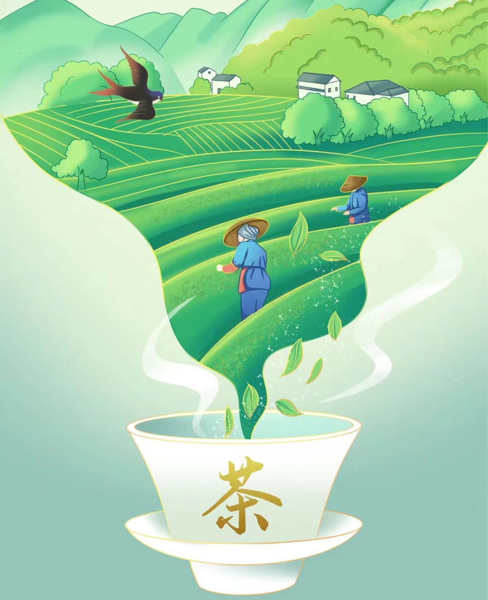

-
采茶
采茶时节至，茶农忙不迭。绿叶丛中寻嫩芽，巧手轻摘入竹篮。茶香四溢满山间，传承千年技艺传。
-
炒茶
炒茶工艺精，火候把控严。叶翻卷舒展间，香飘四溢醉心田。古法今传技艺高，一杯清茗韵味添。
-
制茶
制茶工艺深，匠心独运间。绿叶经揉捻，香韵渐释放。传承古法，品味千年茶韵，一杯清茗话文化。

-
踏上茶园的土地，仿佛置身于绿色的海洋。指尖轻触茶叶，采摘的不仅是自然的精华，更是一份宁静与美好。
走进炒茶的工坊，热浪扑面而来，却挡不住对茶香的期待。双手翻炒，茶叶在锅中跳跃，如同舞动的精灵。见证茶叶从嫩绿到香醇的蜕变，这是一场与时间和温度的较量。
-
炒茶的炉灶燃起，杀青的时刻来临，茶叶在高温中翻滚，青涩渐渐褪去，醇香缓缓袭来。
制茶，是艺术，更是心灵的修行。这不仅是一次对传统工艺的体验，更是一次与自然对话、与历史交融的奇妙旅程。在茶香四溢中，品味着劳动的甘甜，领略着生活的美好。